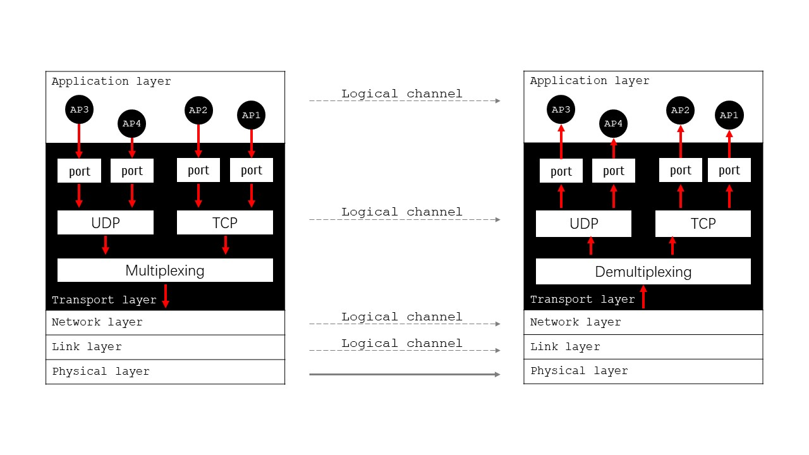
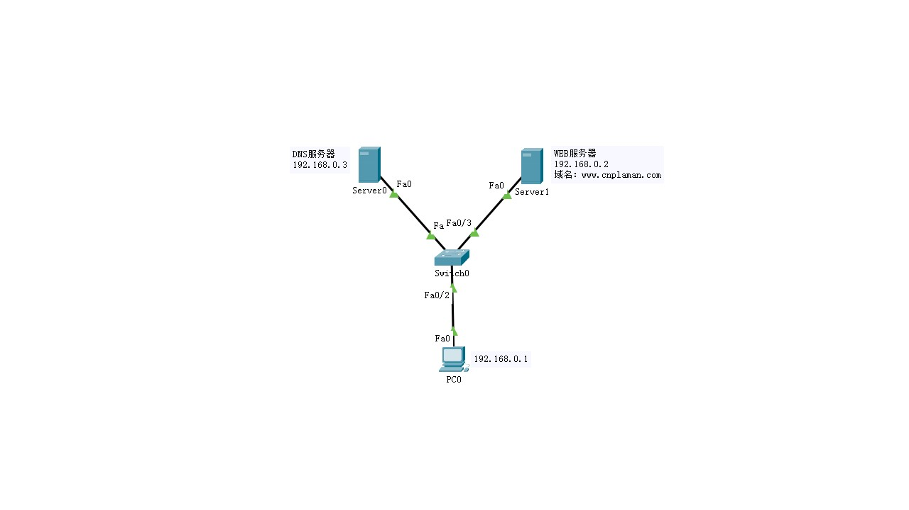
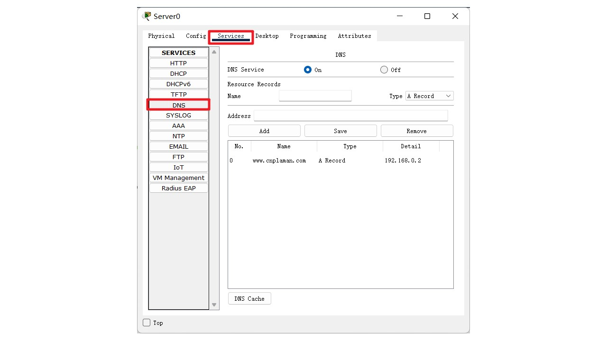
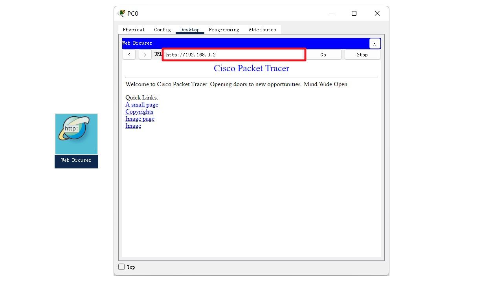
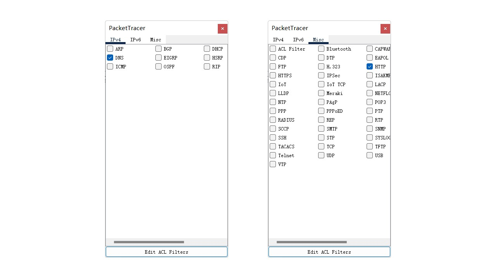

端口 port
- 运输层 Transport Layer
- 运输层以下各层的任务：解决主机到主机的通信；运输层的任务：为应用进程提供端到端的服务
- 计算机通信实际上应用进程之间的通信
- 运输层使用[端口]来区别不同的应用进程
- 根据业务需要，主要提供有：面向连接的TCP和无连接的UDP两种服务
-
 运输层架构 - 主要协议 Protocol
- UDP - User Datagram Protocol
- TCP - Transmission Control Protocol
- 端口 Port
- 软件地址；只具有本地意义
- 长度16bit：0-65535
-
端口分类 熟知端口 登记端口 客户端使用端口 0-1023 1024-49151 49152-65535 -
熟知端口 FTP 20 / 21 Telnet 23 HTTP 80 HTTPS 443 POP3 110 SMTP 25 RIP 520 DHCP 67 / 68 DNS 53
实操 Operation
-
 网络拓扑 - 1.配置WEB服务器：配置IP地址192.168.0.3
- 2.配置DNS服务器：配置IP地址192.168.0.2；添加WEB服务器对应的域名信息
-
 配置网络设备 - 配置IP地址192.168.0.1；添加DNS服务器地址
-

配置主机 - 测试网络连通性
- 1.主机到WEB服务器的PING；[请补充测试结果]
- 2.主机到DNS服务器的PING；[请补充测试结果]
- 实时测试
- 打开主机的WEB浏览器；输入www.cnplaman.com，可以看到返回的WEB页面
- 
- 模拟测试
- 1.筛选协议
- 
- 2.打开主机的WEB浏览器；输入www.cnplaman.com，单步测试数据报的发送过程；主要查看端口
作业 Homework
- 1. 熟知端口分别有哪些？
- 2. 根据实操部分的内容，完成端口的测试
- 3. 以纸质的形式提交实验报告
- 4. 论文格式请参照范文[点击下载]。